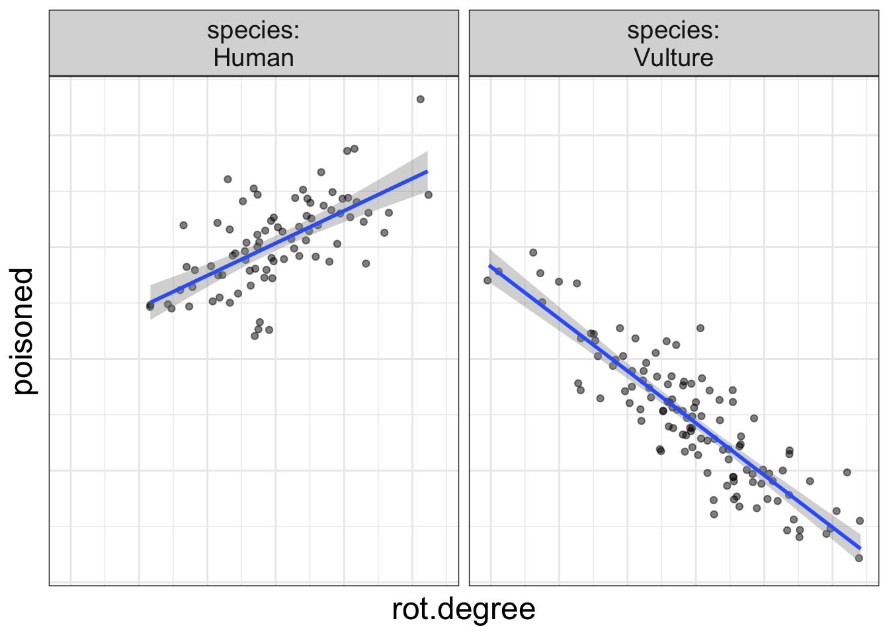
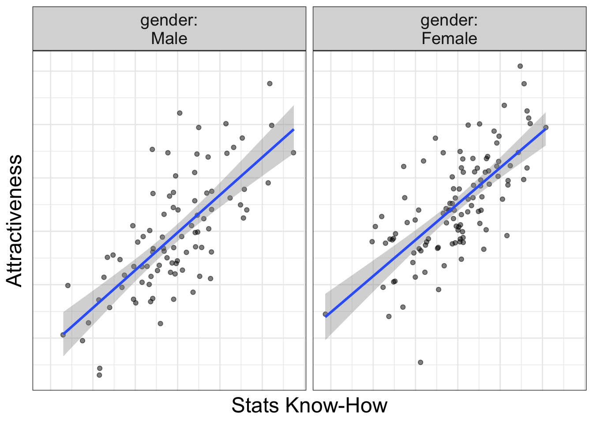
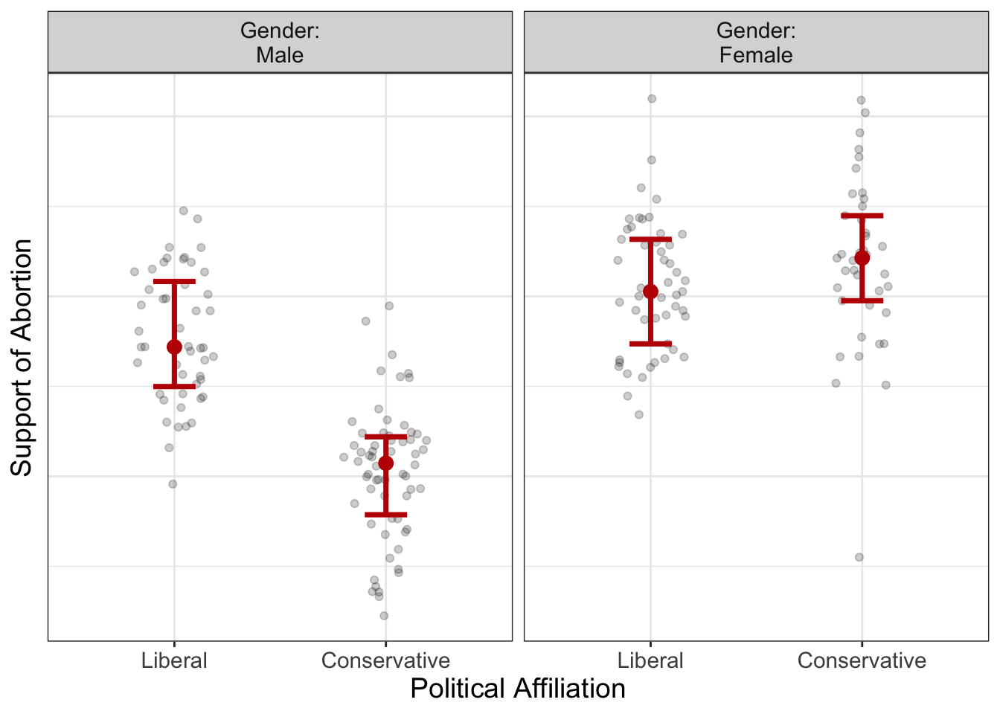
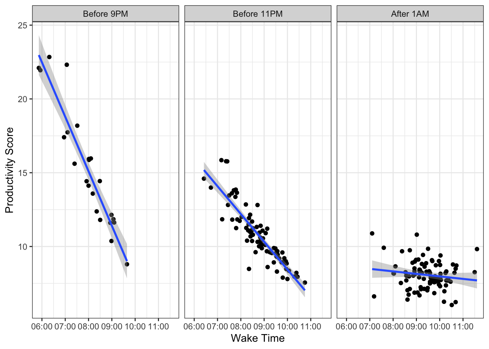
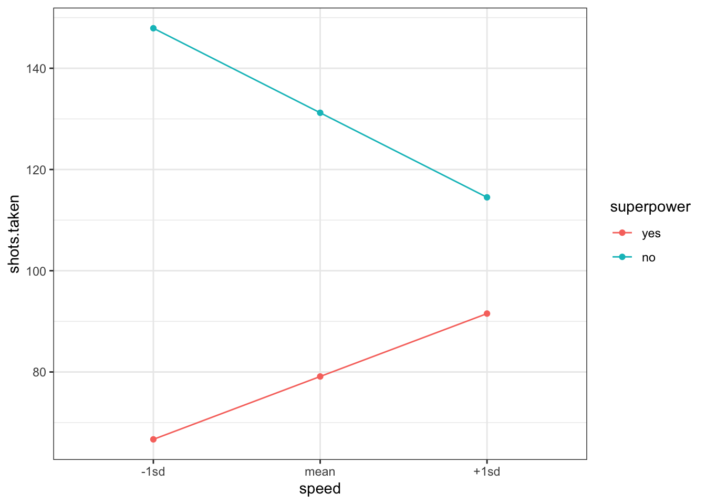
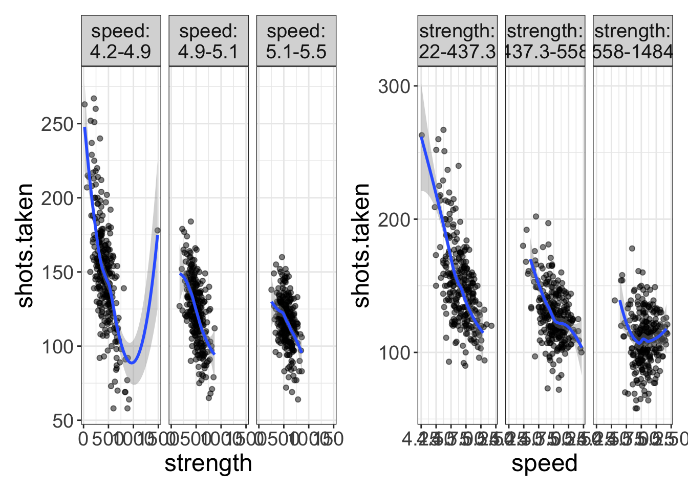
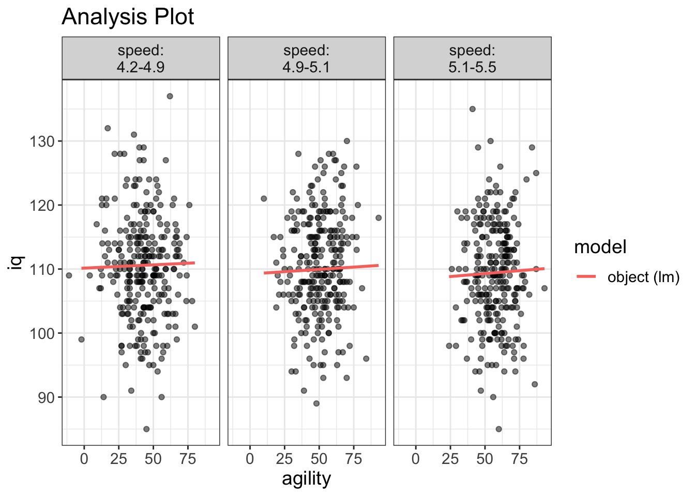
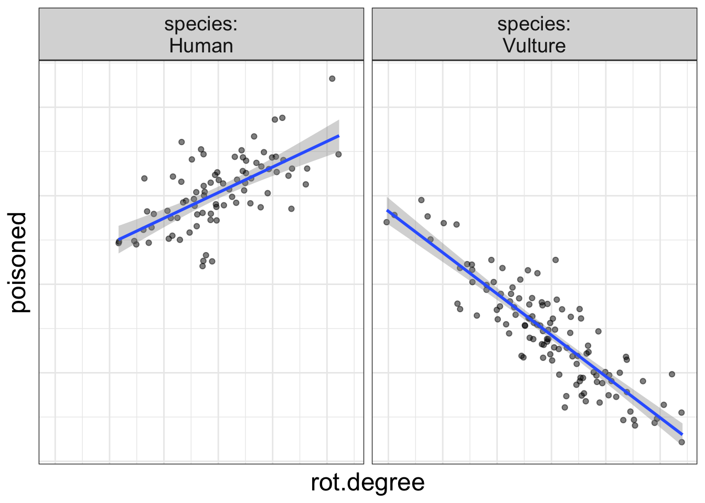

Multivariate GLMs: Interaction Effects
It depends.
It depends.
It depends.
Let’s go ahead and make a song out of that, eh?
Iiiiiiiitttttt deeeeeeeeeeeee……peeeeeeeeeeeeeeeeeeeennnnnnnnnnndddddddddddds!
You have a lovely voice, by the way.
Why are we singing this, you ask?
Because we’re talking about interactions. And, as my mom always says, anytime you say the words, ‘it depends,’ you are speaking of an interaction.
Does testosterone increase a person’s sex drive? It depends on gender.
Does eating rotten meat increase the risk of food poisoning? It depends on species. (Vultures don’t get food poisoning from rotten meat!)
Does waking early in the morning increase one’s productivity? It depends on what time you go to bed.
All these are examples of interaction effects.
An interaction occurs when the effect of one variable (e.g., the effect of waking early on productivity) depends on another variable (what time you go to bed).
Let’s think of relationships that do not interact, shall we?
Does a lack of water lead to a higher probability of death? Yes. Across all species, always.
Does learning statistics make one more attractive? Yes. Always.
Visualizing interaction effects
I’m getting verbose and boring myself with so many words. Let’s look at a graphic, shall we?

A simple visual trick to tell if there’s an interaction
That above plot is right fancy and stuff and illustrates quite nicely an easy-to-use rule to determine whether there’s an interaction effect in the data: if the slopes are not parallel, there is an interaction present in the data.
And, it makes sense. If a slope represents the form of the relationship (e.g., increased rot means more poisoning), and if that slope changes from one group to the next, then it’s clear that the form of the relationship depends on group.
Let’s look at an example where there’s not an interaction:

Notice the slopes are parallel: it doesn’t matter whether you are male of female, increasing your stats know-how always increases your attractiveness.
ALWAYS!
(How do you think I got to be so attractive!)
By the way, this rule holds, no matter whether you have numeric or categorical variables. But, with categorical variables, sometimes we have to imagine lines pointing from the means.
Let’s look at some examples:

In the image above, let’s imagine a line that connects from the means in each group. Are these lines parallel? Absolutely not. This tells us there’s an interaction present. In this case, the relationship between political affiliation and abortion support depends on gender; for males, there’s a very strong difference between liberal and conservatives in their support of abortion. For females, on the other hand, there’s not much of a difference between in abortion support for the two political affiliations.
Let’s look at one more example, but this with all numeric variables.

Is there an interaction effect going on here? Absolutely! The lines are not parallel. Not surprisingly, rising earlier means more productivity for those who go to bed early, but rising early for those who go to bed late means less productivity.
Interactions between numeric variables
In my experience, researchers tend to have an aversion to investigating and interpreting interactions between two numeric variables. Rarely are interactions even mentioned in stats textbooks. When people do try to investigate interactions between numeric variables, they often convert numeric variables into categorical variables prior to analysis in what’s called a “simple slopes analysis.”
Simple Slopes Analysis
Back in the stone ages, people used to do what’s called a “simple slopes analysis.” Alright, so that was a misleading statement. People still do simple slopes analyses. The purpose of a simple slopes analysis is to understand the nature of an interaction. You (typically) do a simple slopes analysis after you’ve detected a statistically significant interaction. (I almost vomited writing the words ‘statistically significant’). In other words, interactions are an afterthought, at best.
In my mind, understanding interactions should never be an afterthought.
Let’s look at an example, shall we? Below, is an anova summary table of the avengers dataset:
| Df | Sum Sq | Mean Sq | F value | Pr(>F) | |
|---|---|---|---|---|---|
| speed | 1 | 228,253.076 | 228,253.076 | 407.283 | 0.000 |
| superpower | 1 | 30,715.327 | 30,715.327 | 54.807 | 0.000 |
| speed:superpower | 1 | 18,547.642 | 18,547.642 | 33.095 | 0.000 |
| Residuals | 808 | 452,826.304 | 560.429 | NA | NA |
My oh my, how significant that interaction is.
Once our results tell us something we should have predicted in advance (i.e., an interaction is present), we now want to know the nature of the interaction. What does it look like?
That’s where simple slopes comes in.
A simple slopes analysis simply computes predictions for various levels of the data. So, we might try to see how our model predicts shots.taken (our outcome variable) for a few different values of speed and for each level of superpower (yes versus no). That might look like this (btw, this is a bad way of doing this, so don’t….):

So, apparently, speed means more shots taken for non-superheroes and less shots taken for superheroes.
But, this approach to understanding interactions is problematic.
Why?
There’s worse things one could probe an interaction. But, this model takes a continuous variable (speed) and condenses all that rich information into just three values (-1sd, mean, +1sd). It’s not necessary. Instead, why not just plot a regular-old scatterplot (and maybe have different panels for superheroes and non-superheroes)?
By the way, this is exactly what flexplot does: where possible, it maintains the continuous nature of the data. There’s no funky coding we have to do. We don’t have to save predictions to excel then export them to another program. It just does this naturally.
The Flexplot Approach to Interpreting Interactions
So a simple slopes is probably not the best way of investigating interactions. If anyone suggests you convert a numeric variable into discrete categories, please hurl your best “yo momma” joke at them. I’d really appreciate it. When you convert a numeric variable to a categorical variable, you are throwing away information and risk introducing bias.
So, don’t do it.
Flexplot makes it super easy to visualize these. It does so by…um…
…categorizing one of the numeric variables and displaying separate plots for each category.
“Wait a minute!” you say. “Didn’t you just say those who categorize variables are heathens?”
Why yes. Yes I did.
“So why is it okay to plot a numeric variable as if it’s a categorical variable, but it’s not okay to categorize a numeric variable from the start?”
Good question!
I’ve got three answers. First, when we categorize a numeric variable for just the plots, it does nothing to the actual numbers. So the slopes, p-values, bayes factors, semi-partial correlations, etc. are unaffected by how I plot them.
Second, as opposed to a simple slopes analysis, we’re not categorizing all continuous variables. Notice in the plot below, we have not converted speed to a categorical variable. Compared to the simple slopes plot, this has a richness of information. We only categorize when we have to, and even then, it’s just for visualization purposes.
flexplot(shots.taken~speed + superpower, data=avengers)
Third, as I will stress throughout this book, it is very important with multivariate data to view the data in multiple ways. Just about every visualization is going to have to compress information just to make the data viewable. For example, if we’re looking at the relationship between speed, shots taken, and strength, we’re going to have to categorize one variable. In the left image, I’ve categorized speed, while in the right plot I’ve categorized strength. Both plots offer a different perspective on the analysis.
a = flexplot(shots.taken~strength | speed, data=avengers)
b = flexplot(shots.taken~speed | strength, data=avengers)
library(patchwork)
a+b
So, in short, there’s no reason to fear numeric interactions. Flexplot handles these with aplomb and a-cherry, and provided you view the data from multiple angles, you’ll circumvent any problems with categorizing numeric variables.
The GLM for interaction effects
See how clever I am? I started with visuals long before I went to the math. I’d-a lost you if I’d started with the math.
But, now that you’ve warmed up, it’s time to do some math.
How do you express an interaction effect as a GLM? It’s actually quite easy:
\(y = b_0 + b_1 X_1 + b_2 X_2 + \mathbf{b_3 X_1 \times X_2}\)
All we did was add a new variable, called an interaction effect, that is literally the product of the two variables.
Let me show you how that’s done, but not because you’re going to have to do this. R will do this for you in the background! You don’t have to do this! I’m just showing you for illustrative purposes!
Let’s look at the first few rows of the avengers dataset:
| iq | agility | speed | agility_speed_interaction |
|---|---|---|---|
| 118 | 27 | 5.05 | 136.35 |
| 109 | 54 | 4.98 | 268.92 |
| 90 | 56 | 4.84 | 271.04 |
| 114 | 63 | 5.24 | 330.12 |
| 116 | 30 | 5.01 | 150.30 |
| 137 | 62 | 4.79 | 296.98 |
Notice that the last column (called agility_speed_interaction) is exactly equal to agility \(\times\) speed. So, when you model an interaction, you are literally creating a new variable that is equal to the two predictors multiplied together.
But, once again, R will do this for you so you don’t have to actually do any sort of multiplication.
How do you tell R to model an interaction? Well, there’s actually two ways to do it:
# method 1:
mod_interaction = lm(iq~agility + speed + agility:speed, data=avengers)
mod_interaction_2 = lm(iq~agility*speed, data=avengers)Both ways are identical in this situation. The second method (agility*speed) is simply a shortcut. The asterisk just tells R to model all main effects and interactions between those variables. So, if we did agility*speed*superpower, it would model all three main effects, all three two-way interactions (agility/speed, agility/superpower, and speed/superpower), and the three-way interaction (agility/speed/superpower).
As before, we can use the phenomenal cosmic power of flexplot to automate the visualization:
visualize(mod_interaction, plot="model")
So, what happens for categorical variables? You can’t very well multiply gender by intelligence. Well, remember a few chapters ago how we zero-fied our categorical variables? In that case, the gender variable went from male/female to 0/1. That zero-fied variable is what is multiplied. Let’s see an example of that with the avengers dataset:
| iq | agility | superpower | superpower_zerofy | agility_superpower_interaction |
|---|---|---|---|---|
| 101 | 61 | no | 0 | 0 |
| 107 | 81 | no | 0 | 0 |
| 114 | 64 | no | 0 | 0 |
| 116 | 36 | no | 0 | 0 |
| 112 | 66 | no | 0 | 0 |
| 104 | 70 | yes | 1 | 70 |
Notice how, when we zero-fy a categorical variable, we end up getting a lot of zeros in the interaction variable. More specifically, all non-superheroes now have a score of zero.
Let’s think a bit deeper about that, but using the GLM:
iq = \(b_0\) + \(b_1\)agility + \(b_2\) superpower + \(b_3\) agility \(\times\) superpower
Now, remember, all non-superheroes get a score of zero. So let’s actually work out the equation for those without superpowers:
\[\begin{align} \text{iq} &= b_0 + b_1 \text{agility} + b_2 \times 0 + b_3 \text{agility} \times 0 \\ \text{iq} &= b_0 + b_1 \text{agility} \end{align}\]
That zero makes two terms disappear. What does this equation tell us? \(b_0\) is the intercept for the non-superheroes and \(b_1\) is the slope for the non-superheroes.
Let’s do the same thing, but for the superheroes:
\[\begin{align} \text{iq} &= b_0 + b_1 \text{agility} + b_2 \times 1 + b_3 \text{agility} \times 1 \\ \text{iq} &= b_0 + b_1 \text{agility} + b_2 + b_3 \text{agility} \\ \text{iq} &= (b_0 + b_2) + (b_1 + b_3) \text{agility} \end{align}\]
What do \(b_2\) and \(b_3\) tell us? \(b_2\) tells us the difference in intercepts between the superheroes and the nonsuperheroes, while \(b_3\) tells us the difference in slopes.
Let’s actually run this model in R and study these values:
interaction_model = lm(iq~agility + superpower + agility*superpower, data=avengers)
summary(interaction_model)#>
#> Call:
#> lm(formula = iq ~ agility + superpower + agility * superpower,
#> data = avengers)
#>
#> Residuals:
#> Min 1Q Median 3Q Max
#> -25.0396 -5.0560 -0.1177 5.1352 27.1002
#>
#> Coefficients:
#> Estimate Std. Error t value Pr(>|t|)
#> (Intercept) 110.409694 0.998801 110.542 <2e-16 ***
#> agility -0.008224 0.019262 -0.427 0.670
#> superpoweryes -0.977765 6.085208 -0.161 0.872
#> agility:superpoweryes 0.017401 0.101544 0.171 0.864
#> ---
#> Signif. codes: 0 '***' 0.001 '**' 0.01 '*' 0.05 '.' 0.1 ' ' 1
#>
#> Residual standard error: 8.028 on 808 degrees of freedom
#> Multiple R-squared: 0.0002367, Adjusted R-squared: -0.003475
#> F-statistic: 0.06376 on 3 and 808 DF, p-value: 0.979For this model, 110.41 is the intercept for the non-superheroes, -0.008 is the slope for the non-superheroes, -0.978 is the difference in intercepts between superheroes and non-superheroes, and 0.017 is the difference in slopes between superheroes and non-superheroes. Remember that we can detect interactions by seeing how different the slopes are. If that fourth parameter (\(b_4\) or 0.017 in this example) is close to zero, that means there’s no difference between slopes of the two groups (and hence, no interaction effect). Neato.
I know, I know…This is a little on the technical side. I’m not sure it’s critical that you understand exactly what the math is doing in the background. For most occasions, you don’t need to dissect the coefficients to figure out what’s going on with the interaction; that’s what the visuals are for. What’s more important is that you know there’s no hand-waving going on here. The math in the background is making a sensible choice for operationalizing the interaction.
Common things people screw up in the literature
Being a statistician is hard, you know? Our blood pressure is always near to boiling because we take personal offense when someone does something statistically egregious. This happens quite a lot when people model interactions. So, with that in mind, let me address common abuses involving interactions.
Gripe #1. Interpreting main effects when interactions exist
It’s quite common in the literature to see researchers make a smacking big deal out of the statistical significance of main effects when there are interactions in the model. Let me be clear. I might even use bold font for this…you leave me no choice:
You should never interpret a main effect when there’s an interaction in the model!
Again, I’m sorry to resort to such tactics, but I’ve had it up to here with this misunderstanding :)
Let’s think about why that is…When you have an interaction in the model, that means the main effects are not consistent. Let’s look at a graph, shall we? I’m reproducing the volture data:
flexplot(poisoned~rot.degree | species, data=volture, method="lm") +
theme(axis.text.x=element_blank(),
axis.ticks.x=element_blank(),
axis.text.y = element_blank(),
axis.ticks.y = element_blank())
Now, let me ask you, what is the effect of rot on the probability of being poisoned? Are you struggling to answer the question? I hope so!
Why? Because the effect of rot depends on species.
When interactions are present, neither the interaction nor the main effect should be interpreted in isolation. They must be interpreted within the context of one another.
How do you best do that? Visually, of course! Visuals are the best way of understanding what’s going on in its entirety.
Here’s the take-home message: if there are main effects in your model, they are uninterpretable. You can only interpret them in the context of the interaction.
Gripe #2: Failing to check whether interactions exist when doing an ANCOVA
This second gripe is quite related to the previous gripe. If there is an interaction in a model, we know that any interpretation of main effects is misleading at best. There’s actually a fancy term for this idea:
The assumption of homogeneity of regression.
What does that mean? That means that when we model any sort of multivariate relationship, we assume any variables that interact with one another have been modeled.
Let’s make that a bit more concrete. Let’s say we want to model the association between exercise and depression, after controlling for age, gender, socioeconomic status, and diet. In other words, exercise is our interest variable, and age/gender/ses/diet are our control variables. Most people fit a simple main effects model, like so:
mod = lm(depression~exercise + age + gender + ses + diet, data=mydata)The assumption of homogeneity of regression assumes that none of the control variables interact with the interest variable.
That’s a very strict assumption!
So, before you ever decide to control for variables, you must inspect the visuals (and estimates) to ensure there’s no evidence of interactions.
That also means we ought to be quite careful about what variables we decide to control for since adding more variables only increases the chances we’ll violate the homogeneity of regression assumption.
Estimates for interactions
I’ve been dreading this section. Why? Okay, remember how I said that you can’t really disentangle the main effects from the interaction? Likewise, you can’t really disentangle the interaction from the main effects. The whole model really ought to be interpreted in context. So, an estimate of the interaction effect is probably going to be misleading.
Let me get a bit more technical for a bit. I promise, I’ll return to “stats for dummies”-level writing in a bit.
Remember how earlier I mentioned a linear model of superheroes? I ended up writing out two equations, one for superheroes and one for non-superheroes:
\[\begin{align} \text{iq}_\text{non-superhero} &= b_0 + b_1 \text{agility} \\ \text{iq}_\text{superhero} &= (b_0 + b_2) + (b_1 + b_3) \text{agility} \end{align}\]
And, remember I said that \(b_3\) represents the difference in slopes for the superheroes versus the non-superheroes. Or, \(b_3\) is the effect of the interaction after removing the main effects.
But main effects and interactions can’t really be (psychologically) interpreted independently.
So, it would be nice to have a Cohen’s d-like effect size measure for what is considered small, medium, and large effects sizes for interactions. (And there have been attempts to do this). But, that would be misleading because these really are dependent on the nature of the main effects.
Having said that, flexplot does report the "semi-partial \(R^2\). You can interpret that, but it can be misleading, as I wrote in a blog post once. Instead, here’s what I recommend:
- Fit a model without the main effects and interaction.
- Fit a model with the main effects and interaction.
- Compute the difference in \(R^2\) and report that.
Why do I recommend this? Once again, you can’t disentangle the main effects from the interaction, so you might as well report the variance explained between the main effects and the interaction.
Let’s look at an example. Let’s say we’re modeling the relationship between shots taken, speed, and superpower. First, we’ll fit a model without the main effects or interaction:
mod_small = lm(shots.taken~1, data=avengers)Next, we’ll model the main effects and interaction:
mod_interactions = lm(shots.taken~speed*superpower, data=avengers)Now we can compute the difference in \(R^2\) using the model.comparison function. (We’ll talk more about this beautiful function later):
model.comparison(mod_small, mod_interactions)#> $statistics
#> aic bic bayes.factor p rsq
#> mod_small 7831.392 7840.791 0.000000e+00 <2e-16 0.00
#> mod_interactions 7449.252 7472.750 8.301755e+79 0.38
#>
#> $predicted_differences
#> 0% 25% 50% 75% 100%
#> 0.252 5.638 11.529 20.987 74.862rsq = round(summary(mod_interactions)$r.squared*100, digits=2)Again, we’ll talk about what all these numbers mean later. But for now, we can see the \(R^2\) of the two models and easily compute the difference between them. So, our model explains 38% of the variance.
Of course, you could have just looked at the model’s total \(R^2\) using estimates(mod_interactions) and it would have been identical. But let’s say you have a control variable (perhaps, strength). Now the model’s \(R^2\) isn’t the same as the difference in the model’s \(R^2\) anymore:
mod_small_control = lm(shots.taken~strength, data=avengers)
mod_interactions_control = lm(shots.taken~strength + speed*superpower, data=avengers)
model.comparison(mod_small_control, mod_interactions_control)#> $statistics
#> aic bic bayes.factor p rsq
#> mod_small_control 7410.87 7424.968 0.000000e+00 <2e-16 0.406
#> mod_interactions_control 7235.51 7263.707 1.040765e+35 0.525
#>
#> $predicted_differences
#> 0% 25% 50% 75% 100%
#> 0.000 3.003 6.815 12.025 48.200diffr = round(diff(model.comparison(mod_small_control, mod_interactions_control)$statistics$rsq), digits=2)Now the effect of the interaction/main effects, after controlling for strength, is 0.12.